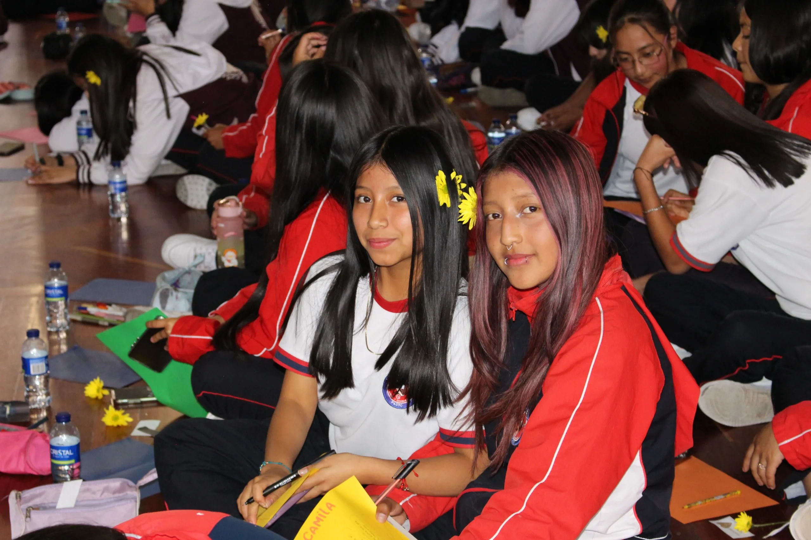

¿Qué es el proyecto?
El proyecto pedagógico transversal de educación sexual y construcción de ciudadanía se consolida como un centro de interés denominado “Semillas de Amor”. Este surge a partir del análisis de las necesidades y problemáticas que inciden en la convivencia escolar, así como de las situaciones e inquietudes manifestadas por las estudiantes de los niveles de preescolar, básica primaria, secundaria y media.

Temáticas que se abordan
En este contexto, se evidencian comportamientos inadecuados e irrespetuosos y, en algunos casos, conductas lesivas frente al reconocimiento de la sexualidad y a las situaciones que de ella se derivan. El proyecto aborda, entre otros, los siguientes aspectos fundamentales para el desarrollo integral:
Enfoque integral
Estas temáticas requieren ser abordadas desde una perspectiva integral que articule las dimensiones biológica, psicológica, emocional y social, promoviendo la participación activa de todos los miembros de la comunidad educativa.